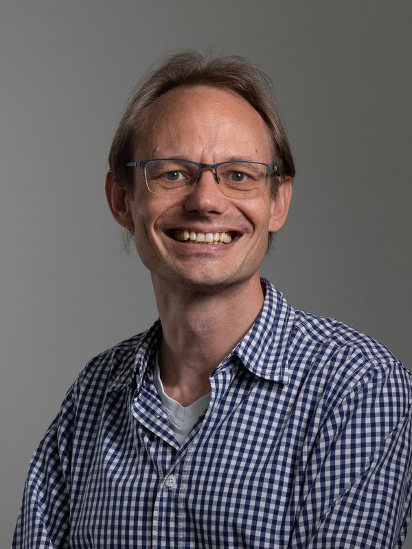
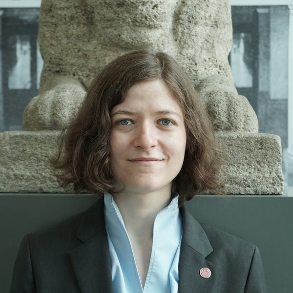
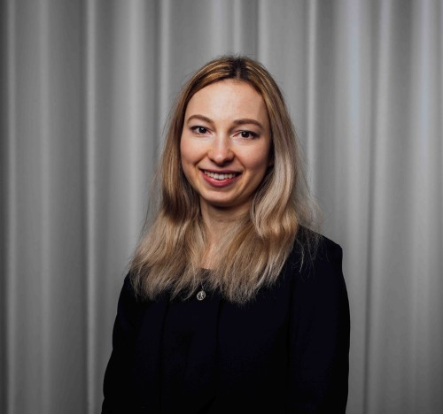

Summer School
From (foundational) interatomic potentials to generative AI
Funded by COST Action DAEMON
This three-day summer school brings together researchers and practitioners to explore both foundational and emerging applications of machine learning across chemistry and materials science. It is aimed at PhD students, postdocs, and early-career researchers in computational chemistry, materials science, and related fields. The program is built around four core sessions, each pairing a lecture with a hands-on tutorial:
Equivariant architectures, foundational models, and fine-tuning strategies for accurate and scalable molecular simulations.
Machine learning approaches for excited states, photodynamics, and nonadiabatic processes.
Hybrid quantum mechanics/molecular mechanics methods enhanced by machine learning for large-scale, condensed-phase, and biological systems.
Generative AI for the inverse design of molecules and materials with targeted properties.
In addition, on the final day, we will host a series of lightning talks and a career round table with leaders from industry and academia who will share insights from academia and beyond, followed by a dedicated Q&A session.
More speakers will be announced soon.

(Professor of Molecular Modeling and Simulation, BOKU University, Vienna)
Machine Learning for Extended Systems: QM(ML)/MM

(Professor of Natural Language Processing, Leipzig University / ScaDS.AI)
Career Round Table

(Professor of AI in Theoretical Chemistry, Leipzig University)
Beyond the Ground State: Machine Learning for Photochemistry
The summer school is structured around four core sessions, each pairing a lecture with a hands-on tutorial. The final day adds lightning talks, a career round table, and a dedicated Q&A session. The detailed schedule will be announced closer to the event.
Johannisallee 29, 04103 Leipzig, Germany
The summer school will be held at the Faculty of Chemistry, Leipzig University. Exact room details will be announced closer to the event.
Accommodation recommendations will be shared soon.
Now Open
The summer school has a capacity of approximately 40–45 participants. Please register via the form below.
Travel grants covering travel and accommodation are available through COST Action DAEMON and will be reviewed by the organizing committee. A motivation can be provided in the registration form.
Optional add-ons — the social dinner (€25) and lunch on Mon–Wed (€25) — are paid in person at on-site registration at the conference, not during online registration.
Personal data is processed in line with the GDPR. Details are shown at the top of the registration form.